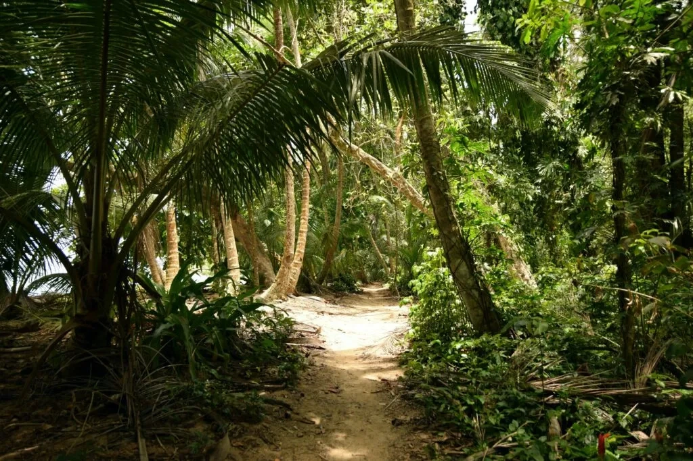
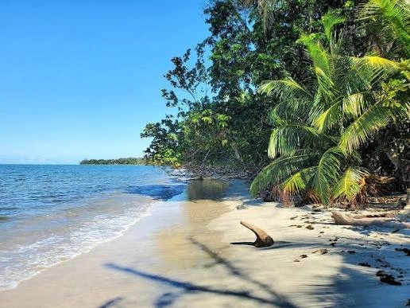
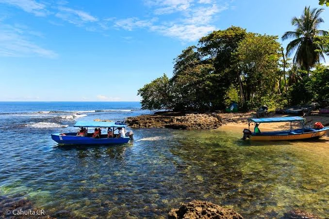
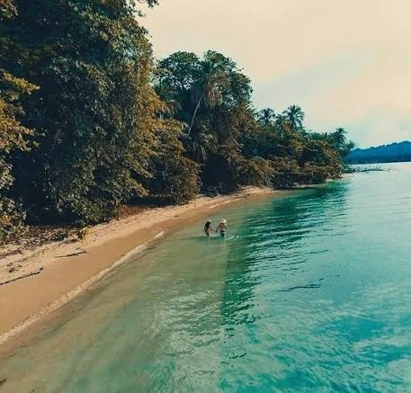

Sendero Principal: Cahuita a Puerto Vargas

Este sendero bordea la costa durante unos 8 km. Es una caminata plana y accesible que conecta el sector de Playa Blanca con el sector de Puerto Vargas, permitiendo observar fauna silvestre a lo largo de todo el recorrido.
Puntos de Interés en la Ruta
Playa Blanca

Punto de partida en el sector de Cahuita. Zona ideal para nadar en aguas tranquilas.
Punta Cahuita

Ubicada a mitad de camino, es la zona más cercana al arrecife de coral.
Puerto Vargas

Sector con pasarelas elevadas sobre el bosque de manglar y área de parqueo.
Consejos para la Caminata
- Lleva al menos 2 litros de agua por persona.
- Usa calzado cerrado o sandalias de senderismo con buen agarre.
- No dejes basura en los senderos.
- Mantén distancia prudente de los animales silvestres.